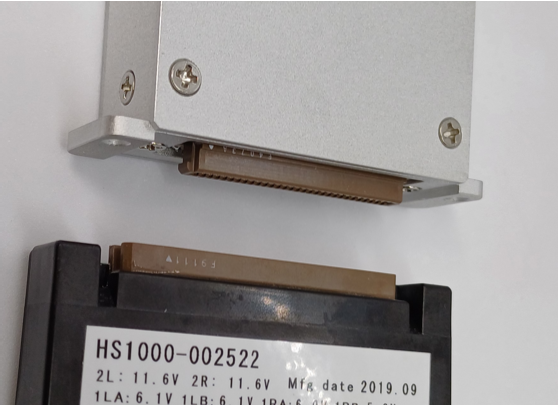

pcKM1024i Driver for KonicaMinolta KM1024i
Overview
● The pcKM1024i allows direct connection of the driver to the head, making setup very simple. Its compact size also makes space utilization easier.
● Head temperature feedback is available even during printing.
● Supports operation up to 48 kHz.

